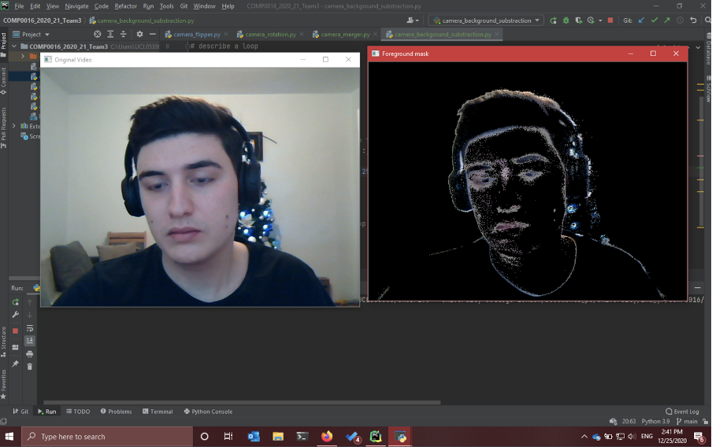
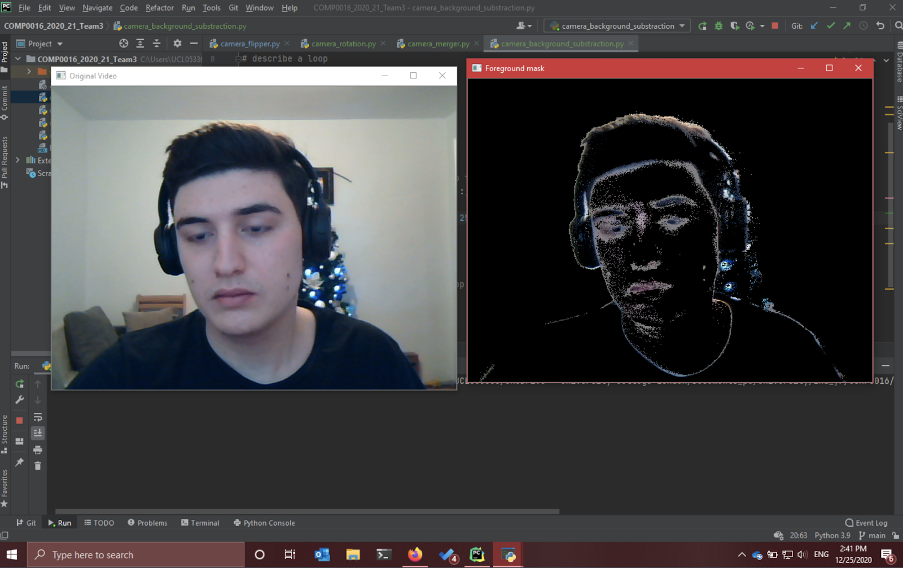
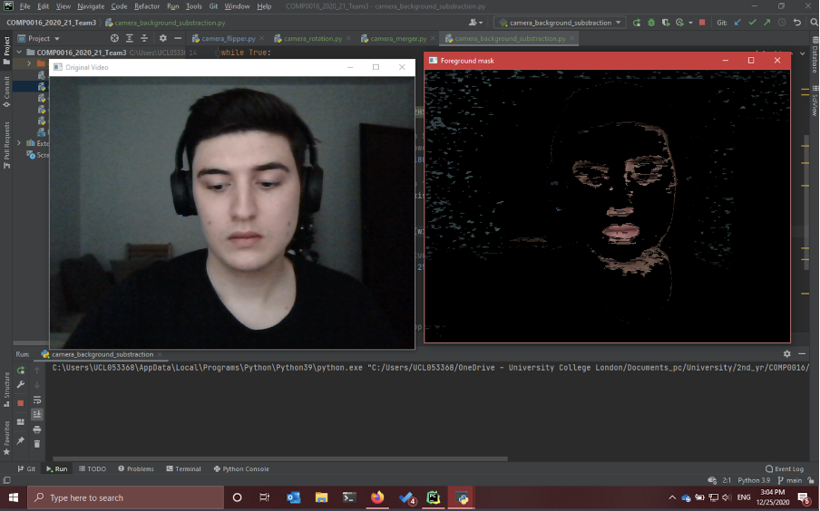

Algorithms

This section describes the algorithms we experimented with in the OpenCV library while trying to implement background subtraction. Since our project does not have much code, there are no other algorithms that we used.
Experiments
Due to the fact that the video streams require the presence of a black background, we experimented with the existing background segmentation algorithms within OpenCV, such as KNN[1] and MOG2[2].
The MOG2 class implements a Gaussian mixture-based background/foreground segmentation algorithm. However, the algorithm failed as it could not detect the face correctly and only kept the colours following the contours of the face rather than keeping the entire face in.
 

Then, we decided to try to fully recognize the face of the person and only bleep out the backgrounds using HSV (but changing the learning rate parameter in the apply() function). The result displayed a more promising result out of all the attempts as it included a greater proportion of the person being filmed. Unfortunately, the outcome was still inadequate. Therefore, we conducted further research to achieve the desired effect.
Discussions
Our developing process had slowed down since none of the algorithms we experimented with worked to the extent we desired. After conducting further research, we found out that the algorithms we experimented with were all designed for subjects in the frame that are further from the camera. The algorithm detects the dynamic and static pixels frame by frame. If it does work successfully, it could get the whole person out of the background. However, our subject (e.g., a person in a video conferencing setting) takes up about 60% of the frame, which leads to certain pixels, such as those of the person’s clothing or hair that are not dynamic enough, not being detected correctly. Hence, we needed to look for an alternative method to achieve isolating the subject from the background.
Result
In the following meeting with our supervisor Dr. Dean Mohamedally, we addressed the difficulties we faced associated with the background subtraction algorithms. We informed him that if a static background was assumed (e.g. a room where the objects in the frame, except for the human subject, do not change in position throughout the entire streaming duration), the development process would be sped up significantly. As a result, we got the approval to assume the presence of a green screen in the frame, so the background subtraction algorithms do not have to be utilized and instead, the green pixel values can simply be detected and transformed to black.